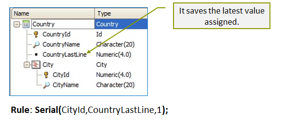

Automatically numbers a Transaction object’s second (or third or another nested) level. Since the Autonumber property can only be applied to single primary keys, to automatically number a second level you can use the Serial rule. This rule requires defining an attribute in the first level of the Transaction, which will save the last value assigned to the lines of the second level. SyntaxSerial(att1 , att2 , step); step Example |
| Backlinks | |
| Toc:GeneXus - Table of contents | Transaction rules |